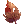
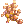
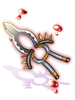
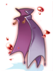
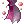
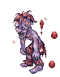
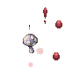
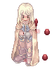

Illusion of Vampire
Main Quest
| Requirements | |
|---|---|
| Base Level: | 130 |
| Starting Point: | payon 157/229 |
| Rewards | |
| Experience: | 50,000,000 (Base) and 50,000,000 (Job) |
| Items: | 5  Illusion Stones Illusion Stones
|
- Speak with Grimm (
gef_dun01 132/223) to start the quest. He is arguing with Mojo and wants you to choose who's right. - Speak with Grimm again. He tells you he picked up a notebook and it seems dangerous.
- Speak with Grimm yet again and you start reading the first chapters of the book.
- Speak with him again. This time he tells you there is already a party sent inside the notebook's memory and you should meet them.
- Speak with Grimm and choose Yes. Send me there to enter the Illusion of Vampire dungeon.
- Upon entering, you'll meet with the other group. Talk to Gem to gather more information. She tells you another priest is missing.
- Find Jubilee at
gef_d01_i 250/164, you can check the minimap to find his location.
You will start seeing the book owner's memories while walking around in the dungeon. - Talk to Wizard (
gef_d01_i 81/135). - You find out it's actually Bomi. Speak with her again. She wants you to collect and hunt the following:
- 10 Sticky Bloods (drops from Matte Drainliars).
- 10 Mushroom Saps (drops from Illusion Black Mushrooms).
- Hunt 5 Matte Drainliars.
- Hunt 5 Illusion Black Mushrooms.
- Once you've gathered all the items, return to Bomi and speak with her.
- Head to the catacomb at the South and speak with Dracula (
gef_d01_i 189/98). - Speak with the King.
- There's a fight happening with Bomi, head back to her and investigate.
- Speak with Bomi again.
- Talk to Gem at the entrance of the dungeon and you will be sent out of the notebook.
- Relay the information to Grimm about what happened inside. You will be rewarded with 5 Illusion Stones and some exprience.
You have now unlocked all the daily quests for Illusion of Vampire.


Daily Quests
Send the Dead Back to Earth
| Requirements | |
|---|---|
| Base Level: | 130 |
| Starting Point: | gef_d01 113/230 |
| Rewards | |
| Experience: | 12,500,000 (Base) and 12,500,000 (Job) |
| Items: | 2 Illusion Stones
|
- Speak with Gem and choose Sure, why not? to accept his request.
- You will have to hunt the following mobs:
- 10 Undead Zombies
- 10 Illusion Zombies
- 10 Illusion Ghouls
- Return to Gem to get your reward.
Sweet Dreams
| Requirements | |
|---|---|
| Base Level: | 130 |
| Starting Point: | gef_d01_i 116/228 |
| Rewards | |
| Experience: | 12,500,000 (Base) and 12,500,000 (Job) |
| Items: | 2 Illusion Stones
|
- Speak with Antoine and choose Sure thing to accept his request.
- Kill 10 Sweet Nightmares and gather 20
Wavy Manes (which also drop from Sweet Nightmares).
- Return to Antoine to get your reward.
Unreliable Fake Blood
| Requirements | |
|---|---|
| Base Level: | 130 |
| Starting Point: | gef_d01_i 81/135 |
| Rewards | |
| Experience: | 12,500,000 (Base) and 12,500,000 (Job) |
| Items: | 1 Illusion Stone
|
- Speak with the Wizard (Bomi) and choose Sure thing to accept her request.
If Bomi is not at her usual location, that means she has turned and she lost control. You must kill her on the map (as an actual mob). - You will need to gather and hunt the following:
- 10 Sticky Bloods (drops from Matte Drainliars).
- 10 Mushroom Saps (drops from Illusion Black Mushrooms).
- Hunt 5 Matte Drainliars.
- Hunt 5 Illusion Black Mushrooms.
- Return to Bomi to get your reward.
Curious by Nature
| Requirements | |
|---|---|
| Base Level: | 130 |
| Starting Point: | gef_dun01 134/224 |
| Rewards | |
| Experience: | 12,500,000 (Base) and 12,500,000 (Job) |
| Items: | 1 Illusion Stone
|
- Speak with Mojo and choose What do you want to know the most? to accept her request.
- You will have to gather and hunt the following:
- 10  Dried Yggdrasil Leaves
- 10
Suspicious Pentacles
- 5 Undead Zombies
- 5 Illusion Zombies
- 5 Illusion Ghouls
- Return to Mojo to get your reward.
Studying in Dim Light
| Requirements | |
|---|---|
| Base Level: | 130 |
| Starting Point: | gef_d01 190/96 |
| Rewards | |
| Experience: | 12,500,000 (Base) and 12,500,000 (Job) |
| Items: | 1 Illusion Stone
|
- Speak with the Wizard (Jojo) and choose Jojo wanted to see me to accept his request.
- You will need to gather the following:
- 10  Shining Spores (drops from Illusion Black Mushrooms).
- 10 Cluster of Nightmares (drops from Sweet Nightmares).
- Return to Jojo to get your reward.
Noisy Neighbors
| Requirements | |
|---|---|
| Base Level: | 130 |
| Starting Point: | gef_d01_i 186/97 |
| Rewards | |
| Experience: | 12,500,000 (Base) and 12,500,000 (Job) |
| Items: | 2 Illusion Stones
|
- Speak with the King and choose They're annoying to accept his request.
- Kill 10 Matte Drainliars and collect 20 Short Bat Hairs.
- Return to the King to get your reward.
Daily Quest Reset

As an exclusive feature to NovaRO, you are able to reset all your daily quests cooldowns.
That means you are able to farm Illusion Stones as much as you want on a single character, without having to create additional characters to bypass the cooldown.
To do so, talk to Osmundi. He can be found inside one of the following locations:
- Illusion of Moonlight dungeon .
- Illusion of Vampire dungeon .
- Illusion of Frozen dungeon .
- Illusion of Abyss dungeon .
- Illusion of Teddy Bear dungeon .
- Illusion of Luanda dungeon .
- Illusion of Twins dungeon .
- Illusion of Labyrinth dungeon .
- Illusion of Underwater dungeon .
They are separated in 5 distinct difficulty groups. Each reset will award you with a set amount of:
- Tier 1: Illusion of Moonlight and Illusion of Frozen.
- Reset Reward:
 10 Illusion Stone and a choice between
10 Illusion Stone and a choice between  Moonlight Refine Box and
Moonlight Refine Box and  Frozen Refine Box
Frozen Refine Box
- Reset Reward:
- Tier 2: Illusion of Vampire and Illusion of Abyss
- Reset Reward: 12 Illusion Stone and a choice between
 Vampire Refine Box and
Vampire Refine Box and  Abyss Refine Box
Abyss Refine Box
- Reset Reward:
- Tier 3: Illusion of Teddy Bear and Illusion of Underwater - 1
- Reset Reward: 14 Illusion Stone and a choice between
 Teddy Bear Refine Box and
Teddy Bear Refine Box and  Underwater Refine Box
Underwater Refine Box
- Reset Reward:
- Tier 4: Illusion of Luanda and Illusion of Twins
- Reset Reward: 16 Illusion Stone and a choice between
 Luanda Refine Box and
Luanda Refine Box and  Twins Refine Box
Twins Refine Box
- Reset Reward:
- Tier 5: Illusion of Labyrinth and Illusion of Underwater - 2
- Reset Reward: 22 Illusion Stone and a choice between
 Labyrinth Refine Box and Underwater Refine Box
Labyrinth Refine Box and Underwater Refine Box
- Reset Reward:
The first reset of the day, for each group, will give a 12 Illusion Stone bonus.
Once you complete the dailies of one of the Tiers above, you can reset them. After a reset, these quests will not give any experience until their original 24 hours cooldown pass.
Each Tier can be completed and reset separately, but you cannot reset dailies from a single Illusion Dungeon without completing the others in their respective group.
MVP Spawn
To spawn the Angry Dracula MVP, you have to:
- Complete the Unreliable Fake Blood quest 30 times (globally). Bomi will then appear on the map and the NPC will temporarily disappear.
- Once you've defeated Bomi, the NPC will reappear and Angry Dracula will spawn to fight you instead.
- While Angry Dracula is alive, the regular NPC (near the catacomb) will also disappear.
Illusion Gears
Speak with the Great Merchant (gef_dun01 139/228) in the Geffen Dungeon map.
You need to equip the base item to be able to craft its Illusion counterpart.
More information about these Illusion Enchants can be found in this page.
| Image | Name | Description | Crafting |
|---|---|---|---|
|  | Illusion Infiltrator [2] | Def + 3
Flee + 5 Perfect Dodge + 2 Increases physical damage on Demi-Human race targets by 60%. If upgrade level is +9 or higher, additional Flee + 5 and additional Perfect Dodge + 2 If upgrade level is +10 or higher, Atk + 5% Aspd + 10% If If
Attack: 200 Weight: 150 Weapon Level: 4 Required Level: 100 Jobs: Guillotine Cross |
|

|
Illusion Sharpened Legbone of Ghoul [2] | Adds a 4% chance of transforming the user into Ghoul for 6 seconds when performing a short-ranged attack.
While transformed, the user's property becomes Undead. Applies Endure effect for the duration of the transformation.
Attack: 220 Weight: 170 Weapon Level: 3 Required Level: 100 Jobs: Guillotine Cross |
|

|
Illusion Wizardry Staff [2] | MATK + 250
Int + 6 Dex + 2 Additional Int + 1 and Dex + 1 for every 2 upgrade levels of the item up to a maximum upgrade level of 10.
Attack: 150 Property: Neutral Weight: 240 Weapon Level: 4 Requires Level: 100 Usable By: Warlock, Sorcerer |
|

|
Illusion Ballista [2] | Increases long-ranged damage on targets by 1% per upgrade level of the item.
Atk + 50 Increases long-ranged damage on targets by 5%. If If the combined upgrade levels of If the combined upgrade levels of
Attack: 200 Weight: 350 Weapon Level: 4 Requires Level: 100 Usable By: Ranger, Maestro, Wanderer |
100 Shining Spores |

|
Illusion Book of the Apocalypse [2] | Increases physical damage on Water, Earth, Fire, and Wind property targets by 10%.
Increases physical damage by an additional 10% per 3 upgrade levels of the item up to a maximum upgrade level of 10. Increases damage taken from Holy property enemies by 30%. Aspd + 8% Increases critical damage on targets by 5% for every 2 upgrade levels of Illusion Book of the Apocalypse [2]. If Illusion Book of the Apocalypse [2] upgrade level is +9 or higher, Crit + 15. Immune to Curse. If Illusion Book of the Apocalypse [2] upgrade level is +11 or higher, Atk + 100
Attack: 170 Weight: 80 Property : Dark Weapon Level: 4 Required Level: 100 Jobs: Arch Bishop, Sorcerer, Star Emperor |
|
|  | Illusion Ancient Cape [1] | Agi + 2
Additional Agi + 1 per 2 upgrade levels of the item up to a maximum upgrade level of 10.
Shadow Chaser Bonus Matk + 80 If  Illusion Ancient Cape [1] and Illusion Moonlight Dagger [1] upgrade levels are +7 or higher, additional Matk + 80. If the combined upgrade levels of Illusion Ancient Cape [1] and Illusion Moonlight Dagger [1] are +18 or higher, additional Matk + 40. If the combined upgrade levels of Illusion Ancient Cape [1] and Illusion Moonlight Dagger [1] are +22 or higher, increases the damage of Fire property magical attacks on targets by 15%.
Defense: 18 Weight: 60 Required Level: 100 Jobs: Every Job except Novice |
200 Short Bat Hairs |

|
Illusion Skull Ring [1] | This accessory can only be equipped in the right accessory slot.
Adds a chance of inflicting Curse on the target and the user when performing a short-ranged attack.
Weight: 10 Required Level: 100 Jobs: Every Job |
|

|
Illusion Ring [1] | Str + 3
If the user's base Str is 100 or higher, Atk + 30. Aspd + 10% If If
Weight: 20 Required Level: 100 Jobs: Every Job except Novice |


 +7
+7  10
10  +7
+7  +7
+7 


 +7
+7 
 +7
+7  +7
+7 

Illusion Enchants
Illusion equipment can be enchanted. For details, see here.
Refine Box
Completing Daily Quest Reset rewards the player with a Refine Box that can upgrade (or sometimes downgrade) a +4 or higher illusion equipment from the matching dungeon to +7 ~ +10.
Defeating an illusion MVP rewards the MVP player (to be confirmed) by chance with a Special Refine Box that can upgrade (or sometimes downgrade) a +4 or higher illusion equipment from the matching dungeon to +9 ~ +12.
You can exchange 25 Refine Box of a single dungeon for 1 Special Refine Box of the same dungeon from Illusion Merchant NPC ().
Note that:
- The chance of getting each refine level is not uniform. For example, there is a significantly lower chance of getting +10 than getting +7 when using a regular Refine Box.
- An upgrade is not guaranteed. For example, using a Refine Box on a +9 illusion equipment may result in a downgrade to +7.
Monsters
| Image | Name | Level | HP | Size / Race / Element |
|---|---|---|---|---|
|  | Illusion Zombie | 130 | 40,984 | Medium / Undead / Undead 1 |

|
Undead Zombie | 133 | 53,926 | Medium / Undead / Undead 1 |

|
Illusion Ghoul | 136 | 67,379 | Medium / Undead / Undead 2 |

|
Matte Drainliar | 131 | 42,246 | Small / Brute / Shadow 2 |

|
Sweet Nightmare | 135 | 61,334 | Large / Demon / Ghost 2 |
|  | Illusion Black Mushroom | 130 | 150,000 | Small / Plant / Earth 1 |
|  | Bomi | 137 | 378,510 | Small / Demi-Human / Undead 2 |

|
Angry Dracula
|
139 | 6,909,690 | Large / Demon / Shadow 4 |

Cards
| Card | Type | Effects |
|---|---|---|
| Armor Card | Atk + 20
Armor and Weapon are indestructible in battle.
| |
| Headgear Card | Immune to Burn
| |
| Armor Card | Matk + 20
The user's casting cannot be interrupted outside of WoE
| |
| Accessory Card | Enables  Napalm Vulcan Lv. 4. Napalm Vulcan Lv. 4.
If compounded garment upgrade is level +9 or higher, additional Max HP + 1000 and Max SP + 50 | |
| Garment Card | Enables  Health Conversion Lv. 1. Health Conversion Lv. 1.
If compounded garment upgrade is level +9 or higher, additional Max HP + 1000 and Max SP + 50 |